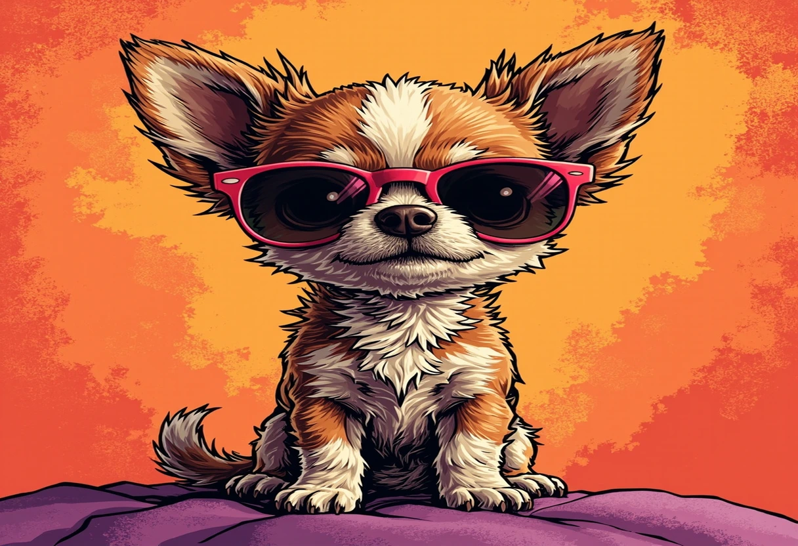
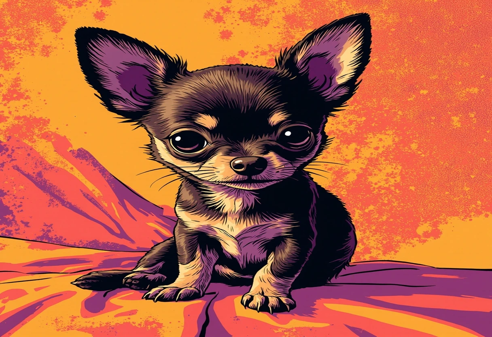

Der Chihuahua – kein Hund der Welt ist kleiner, und kaum einer hat so viel Charakter auf so wenig Raum. Mit einem Gewicht von oft unter zwei Kilogramm und einer Schulterhöhe von gerade einmal 15 bis 25 Zentimetern passt der Chihuahua in jede Handtasche – doch seine Persönlichkeit ist größer als die mancher Hund, die das Zehnfache wiegen. Wer schon einmal einem Chihuahua begegnet ist, weiß: Dieser winzige Hund hat das Herz eines Löwen, den Willen eines Terriers und die Anhänglichkeit eines Schattenbegleiters.
In diesem umfassenden Rasseguide erfährst Du alles, was Du über den Chihuahua wissen musst: seine faszinierende und mysteriöse Herkunft, den unverwechselbaren Charakter, die richtige Haltung und Pflege, eine artgerechte Ernährung, typische Gesundheitsrisiken und ganz praktische Tipps für den Alltag. Außerdem beantworten wir die häufigsten Fragen und helfen Dir bei der Einschätzung, ob der Chihuahua der richtige Hund für Dich ist.
📢 Google AdSense
Anzeige
Herkunft & Geschichte des Chihuahua

Die Herkunft des Chihuahua ist von Mythen und Rätseln umwoben – und bis heute nicht vollständig geklärt. Fest steht, dass die Rasse nach dem mexikanischen Bundesstaat Chihuahua benannt ist, wo sie Ende des 19. Jahrhunderts erstmals von amerikanischen Reisenden entdeckt wurde. Doch die Geschichte dieser winzigen Hunde reicht viel weiter zurück.
Präkolumbianische Wurzeln: Die Techichi
Die am weitesten akzeptierte Theorie besagt, dass der Chihuahua von den Techichi abstammt – einer kleinen, stummen Hunderasse, die von den Tolteken in Mexiko bereits im 9. Jahrhundert gehalten wurde. Die Techichi waren etwa doppelt so groß wie der heutige Chihuahua, aber deutlich kleiner als andere damalige Hunderassen. Archäologische Funde in Form von Tonfiguren und Skeletten belegen die Existenz kleiner Hunde in Mesoamerika über Jahrhunderte.
Als die Azteken im 14. Jahrhundert die Tolteken ablösten, übernahmen sie auch die Techichi und verliehen ihnen eine religiöse Bedeutung. Die kleinen Hunde galten als Führer der Seelen ins Jenseits und wurden bei der Cremierung verstorbener Adliger mitverbrannt, weil man glaubte, dass die Seele des Verstorbenen die Schwäche des Jenseits nicht allein überwinden konnte – der kleine Hund jedoch schon. Aztekenpriester züchteten die Techichi gezielt kleiner, und es wird vermutet, dass Kreuzungen mit dem mexikanischen Haarlosen Hund (Xoloitzcuintli) zur heutigen Chihuahua-Rasse führten.
Die Entdeckung durch die moderne Welt
Nach dem Fall des Aztekenreiches überlebten kleine Hunde im ländlichen Mexiko, insbesondere im Bundesstaat Chihuahua. 1884 berichtete der amerikanische Reisende James Watson erstmals über winzige Hunde, die er auf mexikanischen Märkten kaufte. In den 1890er Jahren brachten amerikanische Touristen und Eisenbahnarbeiter weitere Exemplare in die USA. Die Rasse wurde schnell unter dem Namen „Chihuahua“ bekannt.
1904 wurde der Chihuahua vom American Kennel Club (AKC) erstmals als Rasse registriert – eine Hündin namens „Midget“ war das erste eingetragene Tier. 1923 gründete sich der Chihuahua Club of America, und 1928 erkannte auch der britische Kennel Club die Rasse an. In Deutschland etablierte sich der Chihuahua besonders ab den 1970er und 1980er Jahren, erlebte aber seinen größten Popularitätsschub in den 2000er Jahren – nicht zuletzt dank prominenter Besitzer wie Paris Hilton, die den Chihuahua zur modebewussten „Taschenhund“-Ikone machten.
Die Debatte um europäische Vorfahren
Eine umstrittene Theorie besagt, dass der Chihuahua möglicherweise auch europäische Vorfahren hat. Gemälde aus der Renaissance – insbesondere von Botticelli – zeigen kleine, chiwawaähnliche Hunde. Manche Forscher vermuten, dass spanische Konquistadoren kleine Begleithunde (möglicherweise Malteser oder Zwergpinscher) nach Mittelamerika brachten, die sich mit den Techichi kreuzten. DNA-Analysen haben diese Theorie jedoch nicht eindeutig bestätigt. Die genetische Forschung deutet vielmehr darauf hin, dass der Chihuahua primär altamerikanische Wurzeln hat und eine der ältesten Hunderassen der westlichen Hemisphäre ist.
👉 Produkttipp
Charakter & Wesen: Große Persönlichkeit im Kleinformat
Der Chihuahua ist das lebende Sprichwort „klein aber oho“. Die Rasse zeichnet sich durch eine Reihe charakterlicher Eigenschaften aus, die sie weit über ihre bloße Größe definieren:
- Mutig bis zur Tollkühnheit: Der Chihuahua kennt seine eigene Größe nicht – oder ignoriert sie elegant. Er stellt sich Hunden vor, die fünffach so groß sind, verteidigt sein Revier mit lautem Gebell und zeigt keine Angst vor größeren Artgenossen. Dieser Mut ist bewundernswert, kann aber gefährlich werden, wenn er nicht durch Erziehung und Aufsicht gemündet wird.
- Extreme Anhänglichkeit: Chihuahuas Binden sich intensiv an „ihren“ Menschen – oft so stark, dass sie als „Velcro-Hunde“ (Klettverschluss-Hunde) bezeichnet werden. Sie folgen ihrer Bezugsperson in jeden Raum, wollen auf dem Schoß sitzen, im Bett schlafen und am gesamten Familienleben teilnehmen. Diese tiefe Bindung ist rassetypisch, kann aber ohne richtige Erziehung in Trennungsangst münden.
- Wachsam und aufmerksam: Trotz seiner geringen Größe ist der Chihuahua ein ausgezeichneter Wachhund. Er registriert fremde Geräusche und Bewegungen sofort und meldet sie mit kläffendem Bellen – was in der Wohnung eine nicht zu unterschätzende Eigenschaft ist. Viele Halter schätzen den Alarminstinkt, aber das Bellen muss von Anfang an kanalisiert werden.
- Intelligent und lernwillig: Chihuahuas sind erstaunlich clevere Hunde. Sie lernen Tricks schnell, verstehen Routinen rasch und haben ein ausgeprägtes Gedächtnis. Diese Intelligenz macht sie zu ausgezeichneten Schülern – aber auch zu kreativen Problemlösern, die Türen öffnen, Schubladen inspizieren und Futtervorräte lokalisieren können.
- Stur und eigenwillig: Wie viele kleine Hunde hat auch der Chihuahua eine herrische Seite. Er weiß genau, was er will – und was nicht. Konsequente, liebevolle Erziehung ist unerlässlich, sonst übernimmt der Chihuahua schnell die Regentschaft im Haushalt.
- Misstrauisch gegenüber Fremden: Der Chihuahua ist kein Everyone's-Darling. Er braucht Zeit, um Fremde zu akzeptieren, und zeigt sich zurückhaltend bis abweisend, bis er Vertrauen gefasst hat. Diese Reserve ist Teil seines Wachinstinkts und sollte respektiert, aber durch frühzeitige Sozialisierung gemildert werden.
Langhaar vs. Kurzhaar: Gibt es Wesensunterschiede?
Der Chihuahua kommt in zwei Fellvarianten vor: Kurzhaar (Smooth Coat) und Langhaar (Long Coat). Rein phänotypisch ist der Unterschied auf das Fell beschränkt, aber erfahrene Züchter und Halter berichten von subtilen Wesensnuancen: Langhaar-Chihuahuas gelten oft als etwas ruhiger, weicher und gelassener, während Kurzhaar-Exemplare tendenziell lebhafter, temperamentvoller und schärfer im Wachinstinkt sind. Diese Unterschiede sind individuell jedoch so variabel, dass sie keine verlässliche Grundlage für die Rassewahl darstellen sollten.
Erscheinungsbild: Rassestandard im Detail
Der FCI-Rassestandard (FCI-Gruppe 9, Sektion 3, Standard Nr. 218) definiert den Chihuahua wie folgt:
Körperbau
- Gewicht: Ideal 1,5 – 3,0 kg (Rassestandard: 1,5 – 3,0 kg, Tiere über 3 kg werden disqualifiziert). Tiere unter 1 kg gelten als „Teacup“ und sind beim FCI nicht standardkonform.
- Schulterhöhe: 15 – 25 cm (variiert je nach Gewicht und Proportion)
- Körperform: Kompakt, leicht länger als hoch (leicht rechteckiges Format), gut bemuskelt
- Hals: Leicht gebogen, mittellang, ohne Wamme
- Rücken: Kurz, fest, gerade
- Lendenpartie: Leicht gewölbt, kräftig
- Brust: Tief, geräumig, Rippen gut gewölbt
Kopf & Ausdruck
- Kopfform: Apfelkopffform (Apple Head) – ein charakteristisches, deutlich gewölbtes Cranium mit ausgeprägtem Stop. Der „Hirschkopf“ (Deer Head) mit flacherer Stirn kommt vor, ist aber im Standard nicht erwünscht.
- Fontanelle (Schädelöffnung): Ein Besonderheit des Chihuahua ist die oft offene Molera – eine Fontanelle auf dem Schädel, ähnlich wie bei menschlichen Babys. Sie kann ein Leben lang bestehen oder sich teilweise schließen. Sie ist kein Krankheitsmerkmal, erfordert aber Vorsicht bei Stößen auf den Kopf.
- Fang: Kurz, spitz zulaufend, leicht aufgewirkt
- Gebiss: Scherengebis oder Zangengebis bevorzugt; leichter Vorbiss ist beim Chihuahua toleriert
- Augen: Groß, rund, vollkommen rund, dunkel (bei hellen Fellfarben auch hell erlaubt), Ausdruck: leuchtend, wach
- Ohren: Groß, aufgerichtet, breit an der Basis, in der Ruhe leicht nach außen geneigt – sie verleihen dem Chihuahua sein charakteristisches, fuchsiges Aussehen
Rute & Gliedmaßen
- Rute: Mittellang, dick an der Wurzel, verjüngend zur Spitze, in einer mäßigen Bogenlinie oder als Halbkreis über dem Rücken getragen – ein weiteres Markenzeichen der Rasse
- Vorderhand: Gerade, parallele Stellung, Unterarm mittellang
- Hinterhand: Gut bemuskelt, parallel, Knochen kräftig für die Größe
- Pfoten: Klein, oval, mit gut getrennten Zehen und weichen Ballen
Fell & Farben
Der Chihuahua kennt nahezu jede erdenkliche Fellfarbe und -zeichnung – keine andere Hunderasse bietet eine solche Farbenvielfalt:
- Kurzhaar: Weich, glatt, glänzend, eng anliegend. Unterwolle bevorzugt, aber nicht zwingend.
- Langhaar: Weich, flachwellig bis leicht gelockt, mit Befederung an Ohren, Hals, Beinen, Rute und Pfoten. Unterwolle erwünscht.
- Farben: Fawn (rehbraun), Cream, Black, White, Chocolate, Blue, Red, Sable, Merle, Brindle, sowie diverse Zeichnungen wie Piebald, Irish Marked, Spotted, Masked und viele mehr. Jede Farbe ist zulässig.
Hinweis zur Merle-Färbung: Die Merle-Zeichnung ist umstritten, da das Merle-Gen bei Doppelanlage (Merle × Merle) zu schweren Gesundheitsproblemen führen kann (Taubheit, Blindheit, Augenanomalien). Seriöse Züchter vermeiden die Verpaarung zweier Merle-Tiere. Beim Kauf eines Merle-Chihuahuas ist besondere Vorsicht geboten.
Haltung: Wie lebt der Chihuahua artgerecht?
Der Chihuahua ist ein klassischer Wohnungshund – das ist keine Frage. Seine geringe Größe, sein geringer Bewegungsbedarf im Vergleich zu großen Rassen und seine ausgeprägte Menschenbezogenheit machen ihn zum idealen Begleiter für das Stadtleben. Doch „klein“ heißt nicht „pflegeleicht“ – der Chihuahua hat spezifische Haltungsansprüche, die ernst genommen werden müssen.
Bewegung: Wie viel Auslauf braucht der Chihuahua?
Der Chihuahua ist kein Couch-Potatoe, trotz seiner Größe. Er braucht täglich mindestens 30 bis 45 Minuten Bewegung, aufgeteilt in zwei bis drei kurze Spaziergänge plus aktives Spiel im Haus oder Garten. Ein Chihuahua, der ausschließlich auf dem Sofa liegt, verkümmert sowohl körperlich als auch geistig.
Besonders apportierspiele, Suchspiele und Intelligenzspielzeug sind geeignet, um den Chihuahua auszulasten. Er liebt es, Aufgaben zu lösen und zu arbeiten – auch wenn der „Arbeitsplatz“ das Wohnzimmer ist. Einige Chihuahuas genießen sogar Agility im Kleinformat oder Dog Dancing.
Wohnung & Umgebung
Wenngleich der Chihuahua in der Wohnung lebt, sollte die Umgebung chiwuawa-sicher gestaltet sein:
- Gefahrenquellen minimieren: Der Chihuahua kann zwischen Möbelstücken klemmen, von Sofas oder Betten springen (Gelenkgefahr!), unter Kissen ersticken und durch kleine Öffnungen schlüpfen. Raupen, Stromkabel, kleine verschluckbare Gegenstände und giftige Zimmerpflanzen müssen unzugänglich sein.
- Rampen & Treppen: Hohe Sprünge sind für die empfindlichen Gelenke und die offene Fontanelle gefährlich. Rampen oder kleine Treppenstufen zum Sofa und Bett sind eine sinnvolle Investition.
- Katzentoilette als Ausnahme: Manche Halter nutzen eine Katzentoilette für den Chihuahua in der Wohnung – das funktioniert, ist aber nicht ideal. Besser ist es, den Hund an regelmäßige Gassi-Runden zu gewöhnen und bei Bedarf Hundetoiletten (Grass-Pads) zu nutzen.
- Kälteempfindlichkeit: Der Chihuahua friert schnell – insbesondere Kurzhaar-Exemplare. Bei Temperaturen unter 10°C braucht der Chihuahua Hundekleidung: Pullover, Mäntel und bei Regen auch Regenmäntel. Ein kuscheliges Körbchen ohne Zugluft ist Pflicht.
Sozialisierung & Umgang mit anderen Tieren
Der Chihuahua ist ein ausgesprochener Einzelgänger- oder Paarhund. Mit seinem Menschen ist er glücklich – mit Artgenossen kann es schwierig sein, wenn die Sozialisierung fehlt. Folgende Grundsätze gelten:
- Welpensozialisierung: In den ersten 16 Wochen muss der Chihuahua-Welpe möglichst viele positive Erfahrungen mit Menschen, Tieren, Geräuschen und Umgebungen sammeln. Prägung ist bei dieser Rasse besonders wichtig, da sie von Natur aus misstrauisch ist.
- Mit anderen Hunden: Chihuahuas neigen zum „Kleiner-Hund-Syndrom“ – sie kompensieren ihre Größe mit Aggression. Frühzeitige Sozialisierung mit freundlichen, gut sozialisierten Hunden (auch größeren) ist entscheidend. Hundeschule, Welpenspieltreffen und kontrollierte Begegnungen sind wichtige Bausteine.
- Mit Katzen: Chihuahuas und Katzen können gut zusammenleben, wenn die Eingewöhnung langsam und respektvoll erfolgt. Der Chihuahua sollte lernen, die Katze nicht zu jagen, und die Katze sollte Rückzugsorte haben.
- Mit Kindern: Hier ist Vorsicht geboten. Der Chihuahua ist kein klassischer Familienhund für kleine Kinder. Kinder unter 6 Jahren können den kleinen Hund versehentlich verletzen oder erschrecken, und der Chihuahua kann bei Bedrängnis schnappen. Für ältere, rücksichtsvolle Kinder, die den Hund respektieren, kann es jedoch wunderbar funktionieren.
Erziehung: Konsequenz statt Nachsicht
Der häufigste Fehler bei der Chihuahua-Erziehung ist „Small Dog Syndrome“: Weil der Hund so klein und niedlich ist, werden unerwünschtes Verhalten (Bellen, Ziehen an der Leine, Anspringen, Kläffen bei Gastgebern) toleriert oder sogar belohnt. Ein Chihuahua, der auf dem Arm getragen wird, wenn ihm ein anderer Hund zu nahe kommt, lernt: „Aha, mein Mensch rettet mich – der andere Hund ist also gefährlich.“ Das verstärkt das Problem.
Richtig ist:
- Konsequente, liebevolle Führung von Tag 1 – der Chihuahua braucht Regeln und Grenzen wie jeder andere Hund auch
- Kein Tragen bei Angst – der Hund muss lernen, Situationen selbstständig zu meistern
- Leinenführigkeit auch für den kleinen Hund – ein Chihuahua, der an der Leine zieht, ist genauso problematisch wie ein ziehender Deutscher Schäferhund
- Positive Verstärkung – der Chihuahua reagiert empfindlich auf harte Töne und Bestrafung. Lob, Leckerlis und Spiel sind die Motivatoren.
- Mäßigung beim Bellen – ein „Ruhig“-Kommando und die Redirection auf ein alternatives Verhalten verhindern, dass der Chihuahua zum Dauerkläffer wird
Ernährung: Das kleine Hund, der große Ansprüche stellt

Die Ernährung des Chihuahua verdient besondere Aufmerksamkeit, denn dieser winzige Hund hat einen hohe Stoffwechselrate und entsprechend hohe Kaloriendichte pro Kilogramm Körpergewicht – gleichzeitig ist sein Magen winzig, weshalb häufigere, kleinere Mahlzeiten besser sind als eine große Tagesration.
Grundprinzipien der Chihuahua-Ernährung
- Hoher Fleischanteil: Wie bei allen Hunden sollte Fleisch (möglichst frisch oder im hochwertigen Nassfutter) die Basis bilden – mindestens 60–70% tierische Proteinquellen. Getreidearme oder getreidefreie Rezepturen sind besonders für den Chihuahua empfehlenswert, da sein Verdauungstrakt kurze Nahrungsdurchlaufzeiten hat.
- Kleine Kroketten: Wenn Trockenfutter gefüttert wird, müssen die Kroketten extra klein sein – Standardkroketten sind für den Chihuahua-Kiefer zu groß und können zu Zahnproblemen oder Erstickungsgefahr führen. Spezielles Mini- oder Toy-Breed-Futter ist Pflicht.
- Kalorienkontrolle: Der Chihuahua neigt zum Übergewicht – und schon 200 Gramm zu viel sind bei einem 2-kg-Hund 10% Übergewicht! Die Tagesration sollte exakt abgemessen werden. Leckerlis dürfen nur 10% des Tagesbedarfs ausmachen.
- Mahlzeitenfrequenz: Erwachsene Chihuahuas: 2–3 Mahlzeiten pro Tag. Welpen: 4 Mahlzeiten bis zur 16. Woche, dann 3 Mahlzeiten bis zur 30. Woche, danach Umstellung auf 2 Mahlzeiten.
- Hypoglykämie-Prophylaxe: Besonders Welpen und sehr kleine Chihuahuas sind gefährdet für Unterzuckerung (Hypoglykämie). Regelmäßige, kohlenhydratarme Mahlzeiten und ein always-available-Notleckerli (z. B. etwas Honig oder Glukosegel) können lebensrettend sein.
Nassfutter vs. Trockenfutter
Für den Chihuahua ist Nassfutter die bevorzugte Wahl. Es liefert wichtige Feuchtigkeit (viele kleine Hunde trinken zu wenig), ist leichter zu kauen und schmeckt intensiver. Trockenfutter kann ergänzend gefüttert werden, hat aber den Nachteil, dass die Kroketten oft zu groß sind und der Wasserverbrauch bei Trockenfutter-Ernährung steigt – ein Risiko für die Nierengesundheit.
BARF beim Chihuahua
BARF (Biologisch Artgerechtes Rohes Futter) ist beim Chihuahua möglich, aber anspruchsvoller als bei größeren Rassen. Die Mengen sind so klein, dass eine ausgewogene Nährstoffbilanz schwerer zu erreichen ist. Calcium-Phosphor-Verhältnis, Taurin-Versorgung und die Vermeidung von Kehlkopflähmung durch zu große Fleischstücke sind kritische Punkte. Wer BARF beim Chihuahua ernsthaft betreiben möchte, sollte zwingend einen Ernährungsberater für Hunde konsultieren.
Gifte & verbotene Lebensmittel
Aufgrund seiner geringen Körpermasse ist der Chihuahua besonders empfindlich gegenüber toxischen Lebensmitteln. Bereits kleinste Mengen der folgenden Substanzen können lebensgefährlich sein:
- Schokolade / Kakao (Theobromin) – bereits 10 g dunkle Schokolade können für einen 2-kg-Chihuahua tödlich sein
- Weintrauben & Rosinen – Nierentoxizität, schon wenige Stücke
- Zwiebeln & Knoblauch (alle Formen) – Zerstörung roter Blutkörperchen
- Xylit (Zuckeraustauschstoff in Kaugummis, Erdnussbutter) – gefährlicher Blutzuckerabfall und Leberschaden
- Makadamia-Nüsse – neurologische Symptome
- Avocado (Persin) – Herz- und Atemwegsprobleme
- Alkohol – extrem toxisch schon in kleinsten Mengen
📢 Google AdSense
Anzeige
Pflege: Was der Chihuahua an Aufsicht braucht
Die Pflege des Chihuahua hängt maßgeblich von der Fellvariante ab – aber bei beiden gilt: Die Gesundheits- und Sauberkeitspflege ist mindestens genauso wichtig wie die Fellpflege.
Fellpflege
Kurzhaar-Chihuahua: Die Fellpflege ist minimal. Einmal pro Woche mit einem weichen Gummipinsel oder einem Fellhandschuh über das Fell streichen genügt, um lose Haare zu entfernen und das Fell zum Glänzen zu bringen. Im Fellwechsel (Frühjahr/Herbst) kann häufigeres Bürsten helfen. Baden nur bei Bedarf – zu häufiges Baden trocknet die Haut aus.
Langhaar-Chihuahua: Das lange Fell braucht mehr Aufmerksamkeit. Zwei- bis dreimal pro Woche sollte gründlich gebürstet werden – mit einem Feinzahnkamm für die Befederung an Ohren und Beinen und einer weichen Bürste für den Körper. Besonders hinter den Ohren, an der „Hose“ an den Hinterbeinen und in der Achselregion neigt das Fell zum Verfilzen. Baden alle 4–6 Wochen mit einem milden Hundeshampoo ist empfehlenswert.
Krallenpflege
Die Krallen des Chihuahua wachsen oft schnell, und weil kleine Hunde weniger abrasiven Untergrund haben (sie laufen viel auf weichem Boden und werden getragen), reicht das natürliche Abwetzen oft nicht aus. Alle 2–3 Wochen sollten die Krallen kontrolliert und bei Bedarf gekürzt werden – am besten mit einer speziellen kleinen Krallenschere für Toy-Breed-Hunde. Zu lange Krallen beeinträchtigen den Gang und können einreißen.
Zahnpflege
Zahnprobleme sind die häufigste Gesundheitsissue beim Chihuahua. Aufgrund des kleinen Kiefers und der großen Zähne im Verhältnis zur Kiefergröße neigen Chihuahuas extrem zu Zahnstein, Zahnfleischentzündungen (Gingivitis) und frühzeitigem Zahnverlust. Tägliche Zahnpflege ist ideal:
- Tägliches Putzen mit einer Hundezahnbürste (Fingerbürste) und Hundezahnpasta (niemals menschliche Zahnpasta – Fluorid ist toxisch!)
- Zahnpuca-Snacks und Kaustangen ergänzend
- Regelmäßige professionelle Zahnreinigung beim Tierarzt (unter Narkose) – meist ab dem 3.–5. Lebensjahr notwendig
Ohrenpflege
Die großen, aufrechten Ohren des Chihuahua sind anfällig für Schmutzansammlungen und Ohrenmilben. Wöchentlich sollten die Ohren kontrolliert und bei Bedarf mit einem weichen Tuch und Ohrenreiniger gesäubert werden. Wattestäbchen sind tabu – sie können den Gehörgang verletzen oder Ohrenschmalz tiefer hineindrückken.
Augenpflege
Die großen, hervorstehenden Augen des Chihuahua produzieren manchmal vermehrt Tränenflüssigkeit, die zu braunen Verfärbungen im Gesicht führt („Tear Stains“). Diese können mit einem speziellen Augentuch oder einer milden, augenärztlich empfohlenen Lösung täglich gereinigt werden. Bei anhaltender Rötung, Schwellung oder verändertem Sekret ist der Tierarzt aufzusuchen.
Gesundheit & typische Rassekrankheiten
Der Chihuahua hat eine durchschnittliche Lebenserwartung von 14–18 Jahren – er gehört damit zu den langlebigsten Hunderassen überhaupt. Ein gesunder, gut gepflegter Chihuahua kann ein Alter von 20 Jahren erreichen. Doch die Langlebigkeit bedeutet nicht, dass die Rasse frei von Gesundheitsproblemen ist. Im Gegenteil: Der Chihuahua hat eine Reihe rassetypischer Besonderheiten und Risiken, die Halter kennen müssen.
1. Patellaluxation (Kniegelenksluxation)
Die häufigste orthopädische Erkrankung beim Chihuahua. Die Kniescheibe (Patella) rutscht aus ihrer Führung (luxiert), was zu Hinken, Hüpfen auf drei Beinen oder Schmerzhaftigkeit führt. Die Schweregrade werden in vier Grade eingeteilt:
- Grad I: Patella lässt sich manuell auskugeln, rutscht aber von selbst zurück – oft ohne Symptome
- Grad II: Patella rutscht bei Bewegung aus und rutscht zurück – gelegentliches Hinken
- Grad III: Patella bleibt luxiert, lässt sich manuell reponieren – deutliche Lahmheit
- Grad IV: Patella permanent luxiert, nicht manuell reponierbar – starke Lahmheit, Gelenksveränderung
Seriöse Züchter lassen Zuchttiere auf Patellaluxation untersuchen und züchten nur mit Grad 0 oder I. Bei Grad III–IV ist eine Operation oft die einzige Möglichkeit, um Schmerzfreiheit zu erreichen. Die Kosten für eine Patellaluxation-OP liegen bei 1.500–3.000 Euro pro Knie.
2. Trachealkollaps (Luftröhrenkollaps)
Ein weiteres typisches Problem kleiner Hunderassen: Die Ringe der Luftröhre (Trachea) sind nicht fest genug und kollabieren, was zu einem charakteristischen „Gänsegacker“-Husten führt. Betroffene Hunde husten besonders bei Erregung, beim Ziehen an der Leine (deshalb: Geschirr statt Halsband!) und nach dem Trinken. Schwere Fälle können zu Atemnot bis zur Ohnmacht führen. Die Therapie reicht von Gewichtsreduktion und Hustenstillern über Medikamente bis hin zur Stent-Implantation.
3. Hypoglykämie (Unterzuckerung)
Besonders Welpen unter 6 Monaten und sehr kleine Exemplare (unter 1,5 kg) sind gefährdet. Symptome: Zittern, Desorientierung, Schwäche, Krämpfe, im schlimmsten Fall Koma und Tod. Ursache ist ein zu niedriger Blutzuckerspiegel, oft ausgelöst by verpasste Mahlzeiten, Stress, Erregung oder zu viel Bewegung ohnePause. Erste Hilfe: Honig oder Glukosegel auf das Zahnfleisch reiben, sofort den Tierarzt aufsuchen.
4. Hydrozephalus (Wasserkopf)
Ein Überdruck von Gehirnwasser im Schädel, der bei Chihuahuas mit offener Fontanelle (Molera) gehäuft auftritt. Symptome: Vergrößerter Schädel, vorstehende Fontanelle, Sehstörungen, Koordinationsprobleme, Krämpfe. Die Prognose ist bei frühzeitiger Diagnose und medikamentöser/operativer Therapie variabel. Manche Fälle sind mild und gut kontrollierbar, andere führen zum Einschläfern.
5. Zahnprobleme
Wie bereits erwähnt, sind Zahnstein, Gingivitis, Parodontitis und Zahnverlust beim Chihuahua epidemisch. Bis zu 80% der Chihuahuas über 3 Jahre zeigen Zeichen von Zahnfleischerkrankungen. Prävention durch tägliches Putzen und professionelle Reinigung ist der Schlüssel.
6. Herzerkrankungen
Mitralendozyklerdegeneration (MVD) ist die häufigste Herzerkrankung bei kleinen Hunderassen. Die Mitralklappe zwischen linkem Vorhof und linker Kammer undicht, was zu Rückfluss und schließlich Herzinsuffizienz führt. Regelmäßige Echokardiographie (ab dem 5. Lebensjahr empfohlen) ermöglicht Früherkennung.
7. Augenprobleme
Die großen Augen des Chihuahua sind vulnerabel:
- Keratokonjunktivitis sicca (KCS, trockenes Auge): Zu wenig Tränenflüssigkeit, führt zu Entzündungen und Hornhautgeschwüren
- Progressive Retinaatrophie (PRA): Erbliche Netzhautdegeneration, führt zur Erblindung. Genetischer Test verfügbar.
- Linsen-Luxation: Verlagerung der Augenlinse, schmerzhaft und sehbedrohlich
- Corneal Dystrophie: Hornhauttrübung, oft altersbedingt
8. Offene Fontanelle (Molera)
Die Molera selbst ist keine Krankheit, aber sie macht den Kopf verletzlicher. Stöße, fallen von Möbeln oder grobe Behandlung können zu Hirnverletzungen führen. Besonders bei Welpen ist Vorsicht geboten. Die Molera schließt sich bei vielen Chihuahuas im ersten Lebensjahr teilweise oder vollständig – bei manchen bleibt sie offen.
Vorsorge-Untersuchungen: Was & wann?
| Untersuchung | Wann | Warum |
|---|---|---|
| Patella-Luxation | Vor Zucht; jährlich | Häufigste orthopädische Erkrankung |
| Echokardiographie (Herz) | Ab 5 Jahren jährlich | MVD Früherkennung |
| Zahnkontrolle | Jährlich; Putzen täglich | Zahnstein, Parodontitis |
| Augenuntersuchung | Vor Zucht; ab 7 Jahren jährlich | PRA, KCS, Katarakt |
| Allgemeine Vorsorge | 1× jährlich | Gewichtskontrolle, Impfstatus, Parasiten |
| Blutbild (Senior) | Ab 10 Jahren 2× jährlich | Organfunktion, Schilddrüse |
Für wen ist der Chihuahua geeignet?
Ideal für:
- 🏠 Einzelpersons oder Paare, die viel Zeit zu Hause verbringen und einen intensiven, anhänglichen Begleiter suchen
- 🏡 Wohnungsbewohner – der Chihuahua ist der perfekte Hund für Stadtwohnungen, kleine Appartements oder Seniorenresidenzen
- 👵 Senioren – geringes Bewegungsbedürfnis, pflegeleicht (Kurzhaar), liebevoll und treu. Achtung: Sturzgefahr des Hundes bei Gehbehinderungen des Halters!
- 🐕 Erfahrene Hundehalter, die die Bedürfnisse eines kleinen Hundes mit starkem Charakter respektieren und konsequent erziehen können
- ✈️ Reisende – der Chihuahua ist reisefreundlich, klein genug für die Flugzeugkabine und anpassungsfähig
Weniger geeignet
- 👨👩👧👦 Familien mit kleinen Kindern (unter 6–8 Jahren) – Verletzungsgefahr für den Hund, Schnappgefahr bei Bedrängnis
- 🏢 Berufstätige, die den Hund 8+ Stunden allein lassen – Trennungsangst ist beim Chihuahua ein reales Risiko
- 🏃 Sportliche, extrem aktive Menschen, die einen Jogging- oder Wanderpartner suchen – der Chihuahua ist kein Ausdauersportler
- 🐕 Halter, die den Chihuahua als „Accessoire“ betrachten und ihn in der Tasche mitnehmen statt ihn als Hund mit artgerechten Bedürfnissen zu sehen
- 🤧 Sehr laute Haushalte – der Chihuahua neigt zum Bellen und in lauten Umgebungen wird dieses Verhalten verstärkt
Vergleichstabelle: Chihuahua vs. andere kleine Hunderassen
| Eigenschaft | Chihuahua | Yorkshire Terrier | Zwergspitz (Pomeranian) |
|---|---|---|---|
| Gewicht | 1,5–3,0 kg | 1,8–3,2 kg | 1,8–3,5 kg |
| Schulterhöhe | 15–25 cm | 18–23 cm | 18–24 cm |
| Fell | Kurz- oder Langhaar | Langhaar (seidenhaft) | Langhaar (plüschig) |
| Fellpflege | gering (KH) / mittel (LH) | aufwändig | aufwändig |
| Charakter | mutig, anhänglich, wachsam | lebhaft, keck, territorial | lebhaft, extrovertiert, intelligent |
| Bellneigung | hoch | hoch | mittel–hoch |
| Verträglichkeit (Kinder) | ⭐⭐ (nur ältere Kinder) | ⭐⭐ | ⭐⭐⭐ |
| Wohnungstauglichkeit | ⭐⭐⭐⭐⭐ | ⭐⭐⭐⭐⭐ | ⭐⭐⭐⭐ |
| Gesundheitsrisiken | hoch (Patella, Tracheal, Hydrozephalus) | mittel (Patella, Leber) | mittel (Patella, Augen) |
| Lebenserwartung | 14–18 J. | 12–16 J. | 12–16 J. |
| Anschaffungskosten | 800–2.500 € | 800–2.000 € | 1.000–3.000 € |
📢 Google AdSense
Anzeige
Häufige Fragen zum Chihuahua (FAQ)
Wie groß wird ein Chihuahua?
Chihuahuas erreichen eine Schulterhöhe von 15–25 cm und ein Gewicht von 1,5–3,0 kg. Es gibt keine offizielle Größenklassifizierung – Begriffe wie „Teacup“, „Micro“ oder „Pocket“ sind Marketingbegriffe der Zuchtindustrie und nicht standardkonform. Extra kleine Exemplare haben ein erhöhtes Gesundheitsrisiko.
Ist der Chihuahua ein Anfängerhund?
Der Chihuahua ist bedingt als Anfängerhund geeignet. Seine geringe Größe und sein überschaubares Bewegungsbedürfnis sind Pluspunkte, aber sein starker Charakter, seine Neigung zum Bellen und die gesundheitlichen Besonderheiten erfordern fundiertes Wissen und konsequente Erziehung. Ein Anfänger, der bereit ist, sich intensiv einzulesen und Rat zu holen, kann mit einem Chihuahua glücklich werden – der „einfache“ Anfängerhund ist er jedoch nicht.
Wie viel kostet ein Chihuahua?
Ein Chihuahua-Welpe von einem seriösen Züchter (mit Zuchtbuch, Gesundheitsuntersuchungen, Chip und Papieren) kostet 800–2.500 Euro. Der Preis variiert je nach Fellvariante, Farbe, Abstammung und Geschlecht. Vorsicht vor Billigangeboten unter 500 Euro und vor Importen aus Osteuropa – hier werden oft die Eltern nicht auf Patellaluxation oder andere Erbkrankheiten getestet, und die Welpen sind mangelhaft sozialisiert.
Kann der Chihuahua alleine bleiben?
Ja, aber nur nach entsprechender Gewöhnung. Der Chihuahua neigt zu Trennungsangst und sollte schrittweise ans Alleinebleiben herangeführt werden: 5 Minuten, dann 10, dann 30, und so weiter. Er sollte nie länger als 4–5 Stunden allein gelassen werden. Ein Kongs-Spielzeug mit Leckerli, ein Radio und ein gemütlicher Rückzugsort helfen.
Muss ich meinem Chihuahua Kleidung anziehen?
Bei Kurzhaar-Chihuahuas und bei Temperaturen unter 10°C ist Kleidung empfehlenswert – ein Pullover oder Mantel schützt vor Auskühlung. Langhaar-Chihuahuas sind etwas robuster, aber bei starkem Frost oder Regen brauchen auch sie Schutz. Im Sommer ist Kleidung nicht nötig und kann zur Überhitzung führen.
Warum bellt mein Chihuahua so viel?
Bellen ist beim Chihuahua rassetelebedingt – er ist ein Wachhund. Häufige Ursachen für exzessives Bellen: Unterforderung, Trennungsangst, territorialer Instinkt, unzureichende Sozialisierung oder inkonsequente Erziehung (das Bellen wurde versehentlich belohnt). Abhilfe: Alternativverhalten trainieren (z. B. „Ruhig“-Kommando), Auslastung verbessern, Anlass des Bellens entschärfen und professionelle Hilfe bei persistierenden Problemen in Anspruch nehmen.
Sollte ich Halsband oder Geschirr verwenden?
Geschirr! Aufgrund der Gefahr eines Trachealkollaps und der empfindlichen Halsregion sollte der Chihuahua immer an einem Geschirr geführt werden – niemals an einem Halsband, das auf die Luftröhre drückt. Ein gut sitzendes Y-Geschirr oder ein Step-In-Geschirr für kleine Hunde ist ideal.
Besondere Themen: Der „Teacup“-Chihuahua
Der Begriff „Teacup-Chihuahua“ ist ein Marketingbegriff, der Hunde bezeichnet, die extra klein gezüchtet werden – oft unter 1,5 kg, manchmal sogar unter 1 kg. Weder der AKC noch der FCI erkennen „Teacup“ als eigene Varietät an. Die gezielte Zucht auf immer kleinere Größe hat schwere ethische und gesundheitliche Probleme:
- Hypoglykämie: Dauerhaftes Risiko für lebensbedrohlichen Unterzuckerung
- Hydrozephalus: Gehäuft auf, oft mit offener Fontanelle
- Herzfehler: Offener Ductus arteriosus (PDA) und andere kongenitale Defekte
- Fracturen: Knochenbrüche bei minimaler Belastung (springen vom Sofa, Fall aus der Hand)
- Atemnot: Unterentwickelte Atemwege, Trachealkollaps
- Verkürzte Lebenserwartung: Statt 14–18 Jahren oft nur 5–10 Jahre
Unser Rat: Finger weg von „Teacup“-Angeboten. Ein standardkonformer Chihuahua von 1,5–3,0 kg ist klein genug und hat eine deutlich bessere Lebensqualität und -erwartung.
Der Chihuahua-Seniore: Pflege im Alter
Ab einem Alter von etwa 10–12 Jahren gilt der Chihuahua als Senior – auch wenn er mit 10 Jahren oft noch erstaunlich vital ist. Altersbedingte Veränderungen erfordern angepasste Pflege:
- Gesundheitschecks: Ab 10 Jahren halbjährliche Vorsorgeuntersuchungen inklusive Blutbild, Urin und Herzultraschall
- Zahnpflege: Im Alter nehmen Zahnprobleme exponentiell zu. Regelmäßige professionelle Zahnreinigung und Kontrolle sind lebensverlängernd
- Gelenkschutz: Patellaluxation und Arthrose können sich verschlimmern. Weiche Untergründe, Rampen statt Sprünge, ggf. Gelenksupplements (Glucosamin, Chondroitin) nach tierärztlicher Rücksprache
- Gewichtskontrolle: Übergewicht belastet Gelenke und Herz. Die Futtermenge sollte ab dem 8. Lebensjahr schrittweise um 10–20% reduziert werden
- Kognitive Veränderungen: Cognitive Dysfunction Syndrome (CDS) kann auch bei Hunden auftreten: Desorientierung, veränderter Schlaf-Wach-Rhythmus, Interaktionsverlust. Geistige Auslastung und Routine helfen
- Wärme: Ältere Chihuahuas frieren noch schneller. Extra wärmende Körbchen und Kleidung sind wichtig
Chihuahua & Recht: Wichtige rechtliche Aspekte
In Deutschland unterliegt der Chihuahua keiner Rasselisten-Einstufung – er gilt als ungefährliche Rasse und ist in allen Bundesländern ohne Auflagen haltbar. Dennoch gibt es rechtliche Aspekte zu beachten:
- Hundeabgabe: In vielen Gemeinden ist die Hundeabgabe (Hundesteuer) auch für den Chihuahua fällig – es gibt keine Ausnahme für Toy-Breed-Hunde. Ermäßigungen für Zweit- oder Seniorenhalter sind möglich.
- Hundehaftpflichtversicherung: In einigen Bundesländern gesetzlich vorgeschrieben, in allen dringend empfohlen. Auch der kleine Chihuahua kann Schäden verursachen (Bissverletzungen, Verkehrsunfall).
- Leinenpflicht: Gilt grundsätzlich, auch für den Chihuahua. Ausnahme: Hundewiesen und ausgewiesene Freilaufgebiete.
- Chip-Pflicht: Seit 2011 müssen alle Hunde in Deutschland mit einem Mikrochip gekennzeichnet sein – auch der Chihuahua.
- Reisen: Innerhalb der EU: EU-Heimtierausweis, Mikrochip und gültige Tollwutimpfung sind Pflicht. Für Flugreisen: Die IATA-Konvolute regeln den Transport – der Chihuahua kann oft in der Kabine reisen, wenn das Transportbox-Maß eingehalten wird.
Die ersten Wochen mit dem Chihuahua-Welpen
Die Eingewöhnungsphase mit einem Chihuahua-Welpen ist besonders kritisch – nicht nur wegen der Prägung und Sozialisierung, sondern auch wegen der Hypoglykämie-Gefahr. Folgender Ablauf hat sich bewährt:
Tag 1–3: Ankommen & Ankommen lassen
- Dem Welpen Zeit geben, die neue Umgebung zu erkunden – ohne Überforderung
- Einen festen Rückzugsort einrichten (Körbchen, Transportbox als Höhle)
- Fütterung 4× täglich zu festen Zeiten – Futterumstellung langsam (über 7–10 Tage)
- Keine Besuche, keine Ausflüge, keine Begegnungen mit fremden Hunden in den ersten Tagen
- Nachts: Welpen nahe bei sich schlafen lassen (im Körbchen neben dem Bett), um Trennungsangst vorzubeugen
Woche 2–4: Routine & erste Erziehung
- Tägliches Training: Sitz, Platz, Komm – jeweils 3–5 Minuten, 3–4× am Tag
- Gassi-Routine etablieren: nach dem Aufwachen, nach dem Fressen, nach dem Spielen, vor dem Schlafen
- Erste Kontrollierte Begegnungen mit freundlichen, geimpften Hunden
- Besuch beim Tierarzt: 2. Impfung, Gesundheitscheck, Wurmkur
- Leinen- und Geschirrgewöhnung im Haus
Woche 5–8: Sozialisierung & Erweiterung
- Welpenspielgruppe oder Hundeschule (nach Abschluss der Grundimmunisierung)
- Neue Umgebungen: Stadt, Park, Autofahrt, Tierarztpraxis als positiver Ort
- Verschiedene Menschen: Kinder, Senioren, Menschen mit Hüten, Brillen, Regenschirmen
- Geräusche: Staubsauger, Waschmaschine, Türklingel – langsam und mit Belohnung
Mythen & Irrtümer rund um den Chihuahua
Der Chihuahua ist von Klischees und Fehlinformationen umgeben. Zeit, einige der hartnäckigsten Mythen aufzuklären:
Mythos 1: „Chihuahuas kommen aus dem Chihuahua-Bundesstaat – dort wild lebend.“
Falsch. Der Name stammt zwar aus dem Bundesstaat, aber es gibt keine „wilden Chihuahuas“ in Mexiko. Die heute dort vorkommenden kleinen Straßenhunde („Mexican Street Dogs“) sind Mischlinge, keine reinrassigen Chihuahuas.
Mythos 2: „Chihuahuas sind Aggressiv.“
Halbrichtig. Chihuahuas sind von Natur aus nicht aggressiver als andere Rassen – aber sie werden häufig zu Aggressivität erzogen, indem Halter das „Small Dog Syndrome“ tolerieren. Ein schlecht sozialisierter, inkonsequent erzogener Chihuahua kann aggressiv werden – aber das ist ein Erziehungsproblem, kein Rasseproblem.
Mythos 3: „Chihuahuas brauchen keinen Auslauf.“
Falsch. Jeder Hund – auch der kleinste – braucht tägliche Bewegung an der frischen Luft, geistige Auslastung und soziale Kontakte. Der Chihuahua ist kein Katzenersatz und braucht Spaziergänge wie jeder andere Hund auch – nur kürzer und in angepasstem Tempo.
Mythos 4: „Chihuahuas sind Schoßhunde und am glücklichsten auf dem Arm.“
Falsch. Der Chihuahua genießt die Nähe, aber er ist ein Hund – mit Bedürfnis nach eigenständiger Exploration, Schnüffeln, Laufen und Interaktion mit der Umwelt auf dem Boden. Dauerhaftes Tragen auf dem Arm verhindert Sozialisierung und Selbstvertrauen.
Mythos 5: „Chihuahuas und Babys vertragen sich nicht.“
Nuanciert. Die Kombination ist nicht per se ausgeschlossen, aber sie erfordert aktive Supervision und Management. Der Chihuahua kann verletzt werden, der kann schnappen – niemals unbeaufsichtigt lassen! Mit älteren, respektvollen Kindern kann die Kombination wunderbar funktionieren.
Aktivitäten & Beschäftigung für den Chihuahua
Auch der kleine Chihuahua will beschäftigt werden – geistige Auslastung ist mindestens genauso wichtig wie körperliche:
- Intelligenzspielzeug: Futterbälle, Labyrinthe, Snufflematten – der Chihuahua liebt es, sein Futter zu „erarbeiten“
- Trick-Training: Männchen, Pfote, Drehen, Rolle – der Chihuahua ist ein begabter Trick-Performer
- Mini-Agility: niedrige Hürden, Tunnel, Slalom – in angepasstem Maßstab macht Agility auch dem Chihuahua Spaß
- Mantrailing / Nosework: Suchspiele in der Wohnung oder im Garten faszinieren den Chihuahua
- Apportieren: viele Chihuahuas lieben Apportierspiele mit kleinen Bällen oder Spielzeug
- Spaziergänge mit Snüffel-Pausen: Dem Chihuahua Zeit geben, intensiv zu schnüffeln – das ist geistige Auslastung pur
Fazit
Der Chihuahua ist eine Rasse der Extreme: extrem klein, extrem anhänglich, extrem mutig, extrem langlebig – und in den falschen Händen auch extrem anspruchsvoll. Wer den Chihuahua als niedliches Accessoire betrachtet, das in der Handtasche transportiert und auf dem Arm getragen wird, wird weder den Hund noch sich selbst glücklich machen.
Wer jedoch bereit ist, den Chihuahua als das zu akzeptieren, was er ist – ein Hund mit vollem Hundeleben, Hundebefürfnissen und Hundecharakter –, der bekommt einen der treuesten, charismatischsten und langlebigsten Begleiter, die die Hundewelt zu bieten hat. Die tiefe Bindung, die ein Chihuahua zu „seinem“ Menschen aufbaut, ist einzigartig. Seine Wachsamkeit, seine Intelligenz und sein unbändiger Lebenswille machen ihn zu einem Hund, der weit mehr ist als die Summe seiner Kilogramm.
Die Entscheidung für einen Chihuahua sollte bewusst und informiert getroffen werden – mit einem seriösen Züchter, der auf Gesundheit, Charakter und artgerechte Aufzucht setzt. Und mit der Bereitschaft, diesem kleinen Hund mit dem großen Herzen den Platz und die Aufmerksamkeit zu geben, die er verdient.
Du interessierst Dich für weitere kleine Hunderassen? Dann wirf einen Blick in unseren Hunderassen-für-Anfänger-Vergleich.
🔥 Bis zu 3€ Prämie pro Anmeldung sichern
🎬 Amazon Prime testen · 📺 Prime Video · 🎵 Amazon Music · 📡 Amazon Channels